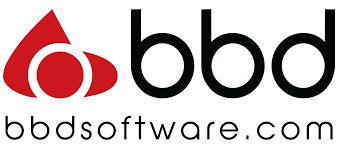
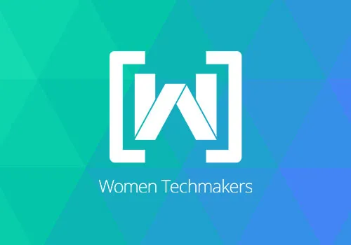

Our initiative aims to provide underprivileged kids in rural areas with access to cloud computing resources and exposure to the tech industry. By partnering with local schools and community organizations, we offer a comprehensive program that includes hands-on learning experiences, curriculum and learning materials, and access to trained instructors and industry experts. Our goal is to help bridge the digital divide and prepare the next generation of tech leaders.
TRUSTED BY BELOW HAPPY PARTNERS


